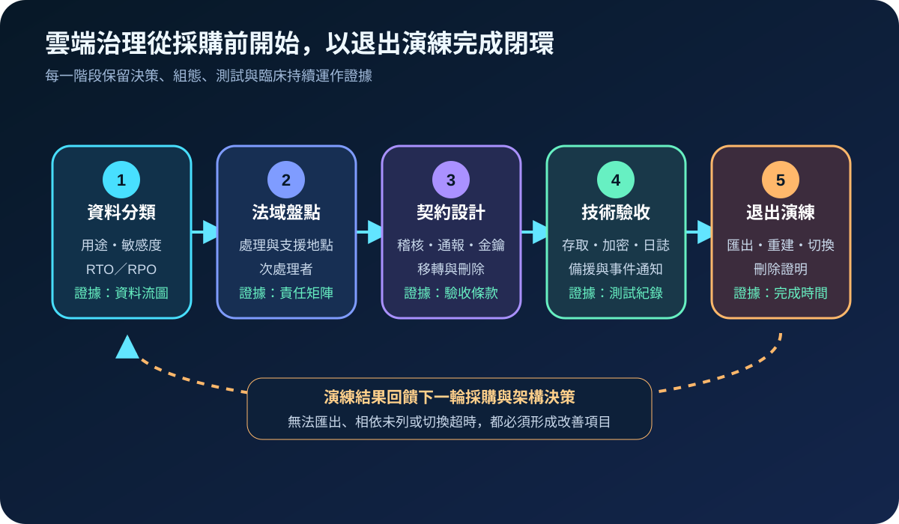
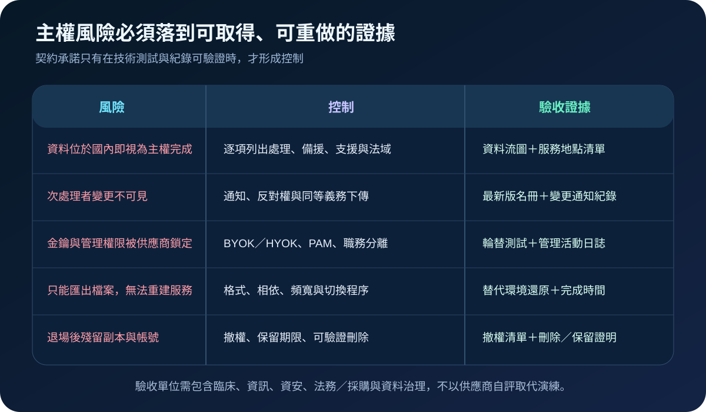

醫療資安國際觀察 · 2026-08-26
醫療雲端不只問資料在哪裡：從法域控制到可退出驗收
作者：Dr. William｜醫療資訊與資安治理實務工作者
醫療資料即使儲存在指定地區，仍可能由跨境支援人員、次處理者或境外控制面接觸。主權治理的重點不是單一機房地址，而是確認適用法域、金鑰與管理權、供應鏈透明度，以及在臨床可接受時間內移轉服務的能力。
名詞解釋：位置、法域與控制權並不相同
data residency 是資料儲存或處理的地理位置；data sovereignty 關注資料受哪些法域與治理權約束。BYOK 由客戶提供金鑰但通常仍在雲端金鑰服務中運作；HYOK 將關鍵金鑰保留於機構控制邊界。subprocessor 是供應商再委託的處理者；exit plan 則定義資料、組態、身分、日誌與服務如何移轉、重建及刪除。
國際現況與適用邊界
歐盟 Data Act 自 2025 年 9 月 12 日起適用，其中第六章建立資料處理服務切換與互通的框架，第七章處理對歐盟境內非個人資料的非法第三國政府存取。ENISA 於 2026 年 7 月發布醫院與醫療服務提供者採購指引，將雲端專屬資安條款納入採購生命週期，並要求關注資料存取、加密金鑰、客戶隔離、事件通知、次處理者與契約終止移轉。
法域界線：Data Act、NIS2 對應內容與 ENISA 指引適用於其歐盟制度脈絡，不是台灣醫療機構的直接法定義務。台灣醫院可將切換、互通、供應鏈揭露與退出證據轉為採購及風險管理條件；實際跨境處理仍須依台灣法規、主管機關公告、資料性質、契約與個案法律評估確認。
規劃：先畫出資料、控制面與服務相依
範圍可先選擇影像交換、備份、遠距服務或研究分析等一項雲端工作負載。盤點資料分類、主要與備援區域、管理控制面、技術支援地點、次處理者、遙測、金鑰、身分來源及臨床相依。角色至少包含臨床服務擁有者、資訊、資安、法務／採購、資料治理與供應商。驗收指標可包含未揭露資料流數、次處理者通知時限、管理權限複核率、金鑰輪替成功率、匯出完整率、替代環境重建時間與殘留帳號數。

實作：把契約承諾轉成技術測試
- 分類與畫流：標示資料用途、敏感度、保存期限、處理／支援地點及 RTO／RPO。
- 界定責任：列出供應商與次處理者的控制、通報、稽核、刪除及變更義務。
- 控制金鑰與權限：依風險選擇 BYOK 或 HYOK，管理介面採具名帳號、MFA、PAM 與職務分離。
- 保留可攜性：約定可讀格式、API、組態、日誌、資料關聯與合理匯出頻寬，避免只取得無法重建服務的檔案。
- 演練替代路徑：定期在隔離或替代環境匯入資料、重建服務並驗證臨床流程，記錄完成時間與缺漏。
- 完成退場：撤銷帳號與金鑰、確認備份保存邊界，取得刪除或依法保留證明。
風險：合規標籤不能取代可退出能力
常見失敗包括把「區域設定」當成完整主權保證、忽略境外支援與控制面、次處理者變更沒有通知、供應商同時控制資料與金鑰，以及匯出資料後仍無法重建臨床服務。BYOK 也不必然阻止供應商在服務執行期間接觸明文。緩解方式是逐項確認威脅模型、權限與解密路徑，並以還原、切換、撤權及刪除證據驗收。

可執行清單
- 是否能列出資料、備援、日誌、控制面與支援人員所在位置？
- 次處理者新增或重大變更是否有通知、評估與處置機制？
- 誰能使用金鑰解密資料，權限與操作是否可稽核？
- 匯出內容是否包含重建服務所需的格式、關聯、組態與日誌？
- 退出演練是否量測完成時間、臨床缺口與資料完整性？
- 退場後帳號、金鑰、副本與備份是否有撤銷或保留證明？
來源
- European Commission｜Data Act explained（法規發布：2023-12-22；開始適用：2025-09-12；查閱：2026-08-26）
- ENISA｜Procurement guidelines for the cybersecurity of hospitals and healthcare providers（發布：2026-07-22；查閱：2026-08-26）
內容說明
本文依健康台灣深耕計畫相關治理內容整理，並參考歐盟官方法規說明與醫療採購指引，提出台灣醫療機構可採用的雲端法域、供應鏈與退出驗收框架；不取代主管機關正式公告、法律意見、個別契約或院內臨床風險評估。